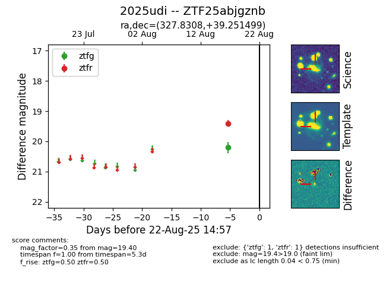

Target 2025udi at 2025-08-21 09:29, see:
FINK: fink-portal.org/ZTF25abjgznb
Lasair: lasair-ztf.lsst.ac.uk/objects/ZTF25abjgznb
ALeRCE: alerce.online/object/ZTF25abjgznb
TNS: wis-tns.org/object/2025udi
YSE: ziggy.ucolick.org/yse/transient_detail/2025udi
alt names
ZTF25abjgznb (ztf,alerce)
2025udi (tns,yse)
coordinates:
equatorial (ra, dec) = (327.8308,+39.25150)
galactic (l, b) = (88.9472,-11.45340)
photometry
last ztfg=20.20, ztfr=19.40
1 ztfg, 1 ztfr detections
